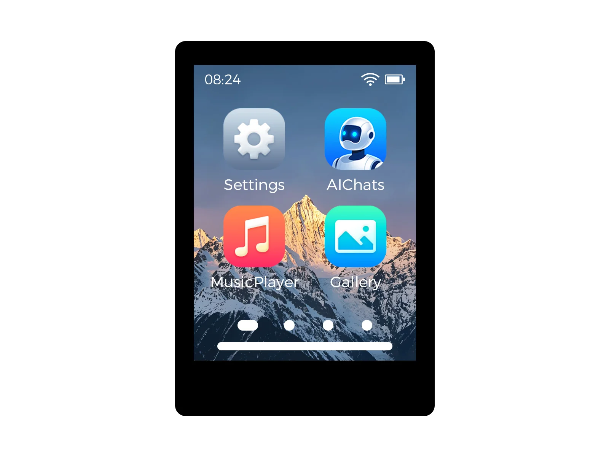

ESP32-C6-Touch-LCD-2.8
Waveshare · Waveshare ESP32-C6 2.8" 240×320 SPI touch board (Wi-Fi 6, IMU, SHTC3)
ESP32-C6-Touch-LCD-2.8 is a 2.8" 240x320 IPS Capacitive touch ESP32 display board by Waveshare based on the ESP32-C6 with 16MB flash.
Features, ports & interfaces
- SPI display
- Capacitive touch (CST3530)
- 16 MB flash
- microSD (TF) card slot
- Wi-Fi 6 (802.11ax, 2.4 GHz) – version from the ESP32-C6 datasheet
- Bluetooth 5.3 (LE) – version from the ESP32-C6 datasheet
- Thread (802.15.4) – IEEE 802.15.4 radio of the ESP32-C6 – SoC capability per the Espressif datasheet; needs firmware support
- Zigbee (802.15.4) – IEEE 802.15.4 radio of the ESP32-C6 – SoC capability per the Espressif datasheet; needs firmware support
- Matter-capable radio (Wi-Fi / Thread) – ESP32-C6 capability per the Espressif datasheet; firmware-dependent
- USB-C
- Speaker
- Microphone
- Battery charge management
- RTC
- IMU: 6-axis IMU
Specifications
| Parameter | Value | Source |
|---|---|---|
| Screen size | 2.8" | source |
| Resolution | 240x320 | source |
| Panel | IPS | source |
| Shape | Rectangular | |
| Display interface | SPI | source |
| Display driver | ST7789 | source |
| Touch | Capacitive | source |
| Touch controller | CST3530 | source |
| MCU / SoC | ESP32-C6 | source |
| MCU family | ESP32-C6 | source |
| Flash | 16MB | source |
| Wi-Fi | Wi-Fi 6 | source |
| Bluetooth | Bluetooth 5 | source |
| USB | USB Type-C | source |
| Category | Waveshare ESP32 touch LCD | |
| Battery charger | Battery charge management | source |
| IMU | 6-axis IMU | source |
| Microphone | Microphone | source |
| RTC | RTC | source |
| SD / TF | TF card slot | source |
| Other sensors | SHTC3 temperature & humidity | source |
| Speaker interface | Speaker | source |
| Vendor | Waveshare |